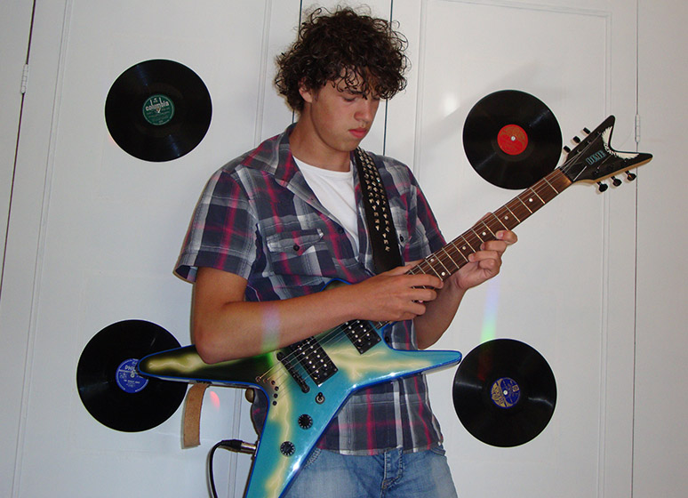
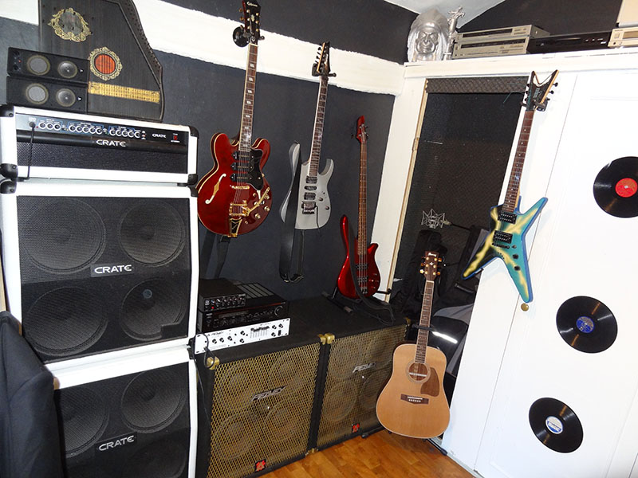
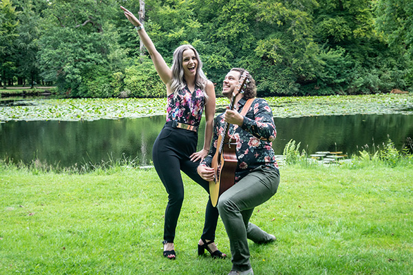

-
1

Picked up my first guitar
September 2007
So I was 12 years old an had my first week of school at A. Roland Holst College. Here we got music lessons from Stef van Dijk. He gave me a guitar and told me to play the bassline of Hit the Road, Jack! And so I did. I was sold immediately.. I decided I wanted to become a lead guitar player and searched for a teacher. I ended up with Franc Tijdink, a true rock legend from the low lands.
-
2

Started my carreer as bedroom rocker...
2007
After two months of practicing 2 hrs a day I bought my second guitar. And so the long road of hard rock, metal and screaming solos started... Frank teached me how to play songs like Smells Like Teen Spirit and Sweet Child 'o Mine. At this point I was practicing around 4 hrs a day.
-
3

Jesus Christ Superstar - School Musical
2009
In 2009 I was asked by my school's music teacher to be the lead guitarist in Jesus Christ Superstar, our school musical. It felt like a dreame come true. I happily said yes and also entered the school band. I learned a lot from playing with other musicians in both projects. I meat some musicians and friends here some of which I still play music with.
-
4

Started as bass player at rockband Evil Plan
2010
At Jesus Christ Superstar I meat Mats Gorter, a friend and also a multi instrumentalist. He told me he was running a band and that they needed a bass player. Alhough I had never touched a bass before I was eager to play in his band. And so story of Evil Plan begins. A story that goes on for 8 years. In that time we wrote a lot of songs, played many gigs and touched the holy grounds of Paradiso (2 times!). Those 8 years have formed me in many ways and I'm very glad that I've experienced these exciting things with some very special people.
-
5

Started as rhytm guitarist at GAAF Muziektheater
2018
So in 2018 I had basicly messed up my relationship with my guitars.. They stood there while my bass got all attention. Until Matthias ten Houte de Lange, a.k.a. de Gooische Pianoleraar asked me to play guitar at his Jesus Christ Superstar project. After saying no too many times he asked me one more time and after some beers I finally said yes. Thank god I did! With a great group of people, our cast and orchestra, we performed JCS at MCO in Hilversum. This is where Stichting GAAF Muziektheater is born. At this point we have greater goals of playing multiple shows a years, teaching childeren music and more.
-
6

Acoustic guitar at Moon van Bakelen
2019
It was time for something new. Something serious. Then I met Moon van Bakelen. A great singer and performer who needed somebody to play some acoustic music. It was a match. Within no-time we had a setlist of 60+ songs and played some gigs. We're still making music together and have plans to play some awesome gigs the coming years.